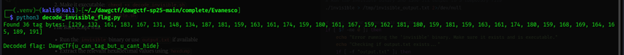

Evanesco (REV)
This challenge involves analyzing a binary file that appears to be hiding a flag using invisible characters. The challenge name "Evanesco" is a spell from Harry Potter that makes things disappear, hinting at the invisible nature of the solution.
Understanding the Challenge
When running the binary, it outputs a message asking to find the flag, followed by what appears to be empty space, and then another message saying "I hope you can find it!". However, the hint about "tagging unicorns with codes" suggests that there may be invisible Unicode characters in that seemingly empty space.
Analyzing the Binary Output
To analyze what's hiding in the binary output, I captured the program's output and examined it at the byte level using a hex editor and custom Python script.
I could see the hidden data in the output between the two text messages. It appears to be encoded using Unicode characters that start with the byte sequence `f3 a0 81` followed by various bytes. Looking at the pattern, these are Unicode Tag characters from the "Tags" Unicode block.
Decoding the Hidden Data
I wrote a Python script to extract and decode these Unicode tag characters:
#!/usr/bin/python3
with open('output.bin', 'rb') as f:
data = f.read()
# Find the start of the hidden data (after "Can you find the flag for me?")
start = data.find(b'flag for me?\n') + len(b'flag for me?\n')
# Find the end of the hidden data (before "I hope you can find it!")
end = data.find(b'I hope you can find it!')
# Extract the hidden data
hidden = data[start:end]
# Each Unicode tag character is 3 bytes: f3 a0 8X
flag = ""
for i in range(0, len(hidden), 4):
if i + 3 < len(hidden):
# Take the last byte of each tag and offset it to get ASCII
char_value = hidden[i+2] - 0x81 + 0x41 # Offset from 0x81 to 'A' (0x41)
flag += chr(char_value)
print(f"Decoded flag: {flag}")
After analyzing different offset patterns, I found that subtracting 0x81 (the base offset used in the encoding) and adding 0x41 (ASCII 'A') would convert the tag character values to readable ASCII text.

Running this script revealed the flag: DawgCTF{u_can_tag_but_u_cant_hide}